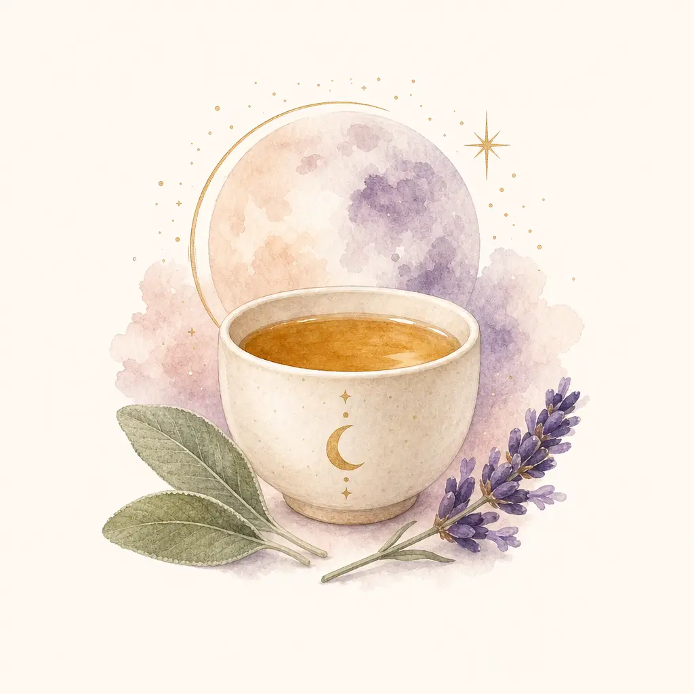

Warmth, with care
A quiet comfort ritual if it suits you. This page approaches herbal foot baths as a traditional practice. The app does not prescribe a formula, dose or treatment schedule.
Check your feet first
If you have diabetes, reduced sensation or poor circulation, do not use this soaking guide. Follow your foot-care team’s instructions. CDC guidance for diabetes advises washing with warm water rather than soaking.
Skip a soak if your skin is broken, irritated or infected. Seek advice for a new sore, swelling, colour change or pain.
Keep it simple
For healthy feet, ordinary washing and careful drying are enough. If you choose a brief soak for comfort, use plain comfortably warm water, never hot water. The NHS foot-care guide limits soaking to no longer than 10 minutes.
Dry thoroughly, especially between your toes. Stop if your skin becomes uncomfortable or you feel unwell. Do not pour hot water into a basin while your feet are in it.

Where tradition meets uncertainty
Terms such as “warming the channels” describe a traditional framework. They are not measurements of ovarian function, hormone levels or circulation.
Herbal products can cause side effects and interactions. During pregnancy, breastfeeding, or when caring for a child, ask an appropriate healthcare professional before using TCM herbs.
Read the herb evidence and cautionsWhat this ritual can tell you
You can notice whether you enjoyed the pause. That observation does not establish an effect on fertility, menstrual pain or sleep, and it should not replace care for persistent symptoms. Studies of heat applied to the abdomen cannot establish that an herbal foot bath has the same effect.
Add a note to my journal Try a gentle breathing pauseSources and scope
Source check: 30 September 2026. CDC foot care, NHS foot care and NCCIH TCM safety support these cautions. They do not validate an Ovuluna treatment protocol.